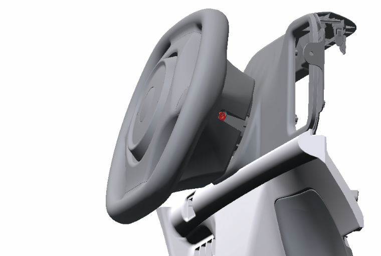

10-X ホーンボタン
構成図
|
1 |
PAD ASSY, STEERING WHEEL (D5130-B1000) |
2 |
トルクスねじ |
取り外し前作業
-
補器バッテリマイナスターミナル取り外し。10-1 補器バッテリ
取り外し手順

1.PAD ASSY, STEERING WHEEL取り外し
-
ボルト２本を緩めてPAD ASSY, STEERING WHEELを取り外す。
取り付け手順
取り外しと逆の手順で取りつける。